能力向上水薬 をドロップするmob一覧
一覧ページへ
※能力向上1
| 大型骸骨 | アンデット | 一般1 | |||||||
|---|---|---|---|---|---|---|---|---|---|
 | 鈍器(410) | 両手剣(270) | 弾(410) | 職業鎧(230) | 冠(210) | 能力向上1(160) | 鎌(270) | ||
| 巨人骸骨 | アンデット | 一般2 | |||||||
 | 鈍器(380) | 牙(250) | 矢(380) | 職業鎧(210) | 指輪(190) | 能力向上1(150) | 双剣(250) | 魔弾(380) | |
| 骸骨騎士 | アンデット | 一般3 | |||||||
| 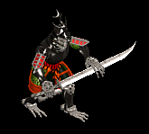 | 鈍器(360) | スリング(240) | 矢(360) | 職業鎧(200) | 爪(180) | 能力向上1(140) | 魔弾(360) | ||
| デスナイト | アンデット | セミ1 | |||||||
 | 鈍器(390) | 牙(260) | 弾(390) | 鎧(220) | 爪(200) | 能力向上1(160) | 双剣(260) | ||
| 地獄の騎士 | アンデット | ボス1 | |||||||
 | 鈍器(470) | ステッキ(310) | 矢(470) | 鎧(260) | 爪(240) | 能力向上1(190) | 魔弾(470) | ||
| リビングメイル | アンデット | 一般2 | |||||||
 | 弓(380) | 片手剣(250) | 盾(380) | 鎧(210) | 手首(190) | 能力向上1(150) | クロー(250) | 銃(380) | |
| 鎧霊 | アンデット | 一般3 | |||||||
 | 弓(360) | 片手剣(240) | 弾(360) | 鎧(200) | 首(180) | 能力向上1(140) | クロー(240) | 銃(360) | |
| 幽霊鎧 | アンデット | 一般4 | |||||||
 | 弓(300) | 両手剣(200) | 盾(300) | 鎧(170) | 手首(150) | 能力向上1(120) | 鎌(200) | 銃(300) | |
| 守護鎧 | アンデット | セミ1 | |||||||
 | 弓(390) | 片手剣(260) | 盾(390) | 鎧(220) | 首(200) | 能力向上1(160) | クロー(260) | 銃(390) | |
| ジャイアント | 人間 | セミ1 | |||||||
| 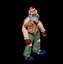 | 鈍器(390) | 牙(260) | HP回復(390) | 足(220) | 首(200) | 能力向上1(160) | 双剣(260) | ||
| コロッサス | 人間 | ボス1 | |||||||
 | 鈍器(470) | 牙(310) | HP回復(470) | 足(260) | 指輪(240) | 能力向上1(190) | 双剣(310) | ||
| ラットキング | 悪魔 | ボス1 | |||||||
| 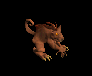 | 投擲(470) | 笛(310) | 弾(470) | 足(260) | 冠(240) | 能力向上1(190) | |||
| オーガ | 悪魔 | 一般3 | |||||||
 | 鈍器(360) | 杖(240) | イベント(360) | 鎧(200) | イヤリング(180) | 能力向上1(140) | 本(240) | ||
| オーガソルジャー | 悪魔 | 一般4 | |||||||
| 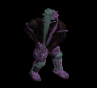 | 鈍器(300) | スリング(200) | 弾(300) | 鎧(170) | イヤリング(150) | 能力向上1(120) | |||
| オーガチーフ | 悪魔 | セミ1 | |||||||
 | 鈍器(390) | 杖(260) | 状態異常回復1(390) | 鎧(220) | イヤリング(200) | 能力向上1(160) | 本(260) | ||
| オーガオフィサー | 悪魔 | セミ3 | |||||||
| 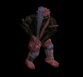 | ステッキ(450) | 弓(300) | HP回復(450) | 鎧(250) | イヤリング(230) | 能力向上1(180) | 銃(300) | ||
| オーガゼネラル | 悪魔 | ボス2 | |||||||
 | 鈍器(490) | 杖(330) | 状態異常回復2(120) | 鎧(270) | イヤリング(250) | 能力向上1(200) | 本(330) | ||
| ゴートマン | 悪魔 | 一般1 | |||||||
 | 笛(410) | 鈍器(270) | 状態異常回復2(100) | マント(230) | 冠(210) | 能力向上1(160) | |||
| 赤い悪魔 | 悪魔 | ボス3 | |||||||
 | none(510) | 両手剣(340) | 鍵(510) | 職業鎧(280) | 首(260) | 能力向上1(200) | 鎌(340) | ||
| ソードスパイダー | 動物 | 一般3 | |||||||
 | 片手剣(360) | 槍(240) | 矢(360) | グローブ(200) | 首(180) | 能力向上1(140) | クロー(360) | 箒(240) | 魔弾(360) |
| 大型モグラ | 動物 | 一般3 | |||||||
 | 両手剣(360) | ステッキ(240) | 弾(360) | 職業鎧(200) | 指輪(180) | 能力向上1(140) | 鎌(360) | ||
| 巨大モグラ | 動物 | 一般4 | |||||||
 | 鞭(300) | 杖(200) | 状態異常回復2(80) | グローブ(170) | 指輪(150) | 能力向上1(120) | 本(200) | ||
| ディガー | 動物 | セミ1 | |||||||
 | 弓(390) | スリング(260) | 弾(390) | 職業鎧(220) | 指輪(200) | 能力向上1(160) | 銃(390) | ||
| マインスィーパ | 動物 | セミ2 | |||||||
| 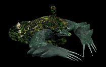 | 鞭(420) | 杖(280) | 弾(420) | グローブ(230) | 指輪(210) | 能力向上1(170) | 本(280) | ||
| ロードブローカー | 動物 | ボス1 | |||||||
 | 笛(470) | ステッキ(310) | 弾(470) | 職業鎧(260) | 指輪(240) | 能力向上1(190) | |||
| 大型骸骨Ex | アンデット | 一般1 | |||||||
| 鈍器(410) | 両手剣(270) | 弾(410) | 職業鎧(230) | 冠(210) | 能力向上1(160) | 鎌(270) | ||
| 巨人骸骨Ex | アンデット | 一般2 | |||||||
| 鈍器(380) | 牙(250) | 矢(380) | 職業鎧(210) | 指輪(190) | 能力向上1(150) | 双剣(250) | 魔弾(380) | |
| 骸骨騎士Ex | アンデット | 一般3 | |||||||
| 鈍器(360) | スリング(240) | 矢(360) | 職業鎧(200) | 爪(180) | 能力向上1(140) | 魔弾(360) | |||
| デスナイトEx | アンデット | セミ1 | |||||||
| 鈍器(450) | 牙(300) | 弾(450) | 鎧(250) | 爪(230) | 能力向上1(180) | 双剣(300) | ||
| 地獄の騎士Ex | アンデット | ボス1 | |||||||
| 鈍器(1200) | ステッキ(800) | 矢(1200) | 鎧(670) | 爪(600) | 能力向上1(480) | 魔弾(1200) | ||
| リビングメイルEx | アンデット | 一般2 | |||||||
| 弓(380) | 片手剣(250) | 盾(380) | 鎧(210) | 手首(190) | 能力向上1(150) | クロー(250) | 銃(380) | |
| 鎧霊Ex | アンデット | 一般3 | |||||||
| 弓(360) | 片手剣(240) | 弾(360) | 鎧(200) | 首(180) | 能力向上1(140) | クロー(240) | 銃(360) | |
| 幽霊鎧Ex | アンデット | 一般4 | |||||||
| 弓(300) | 両手剣(200) | 盾(300) | 鎧(170) | 手首(150) | 能力向上1(120) | 鎌(200) | 銃(300) | |
| 守護鎧Ex | アンデット | セミ1 | |||||||
| 弓(450) | 片手剣(300) | 盾(450) | 鎧(250) | 首(230) | 能力向上1(180) | クロー(300) | 銃(450) | |
| ジャイアントEx | 人間 | セミ1 | |||||||
| 鈍器(450) | 牙(300) | HP回復(450) | 足(250) | 首(230) | 能力向上1(180) | 双剣(300) | |||
| コロッサスEx | 人間 | ボス1 | |||||||
| 鈍器(1200) | 牙(800) | HP回復(1200) | 足(670) | 指輪(600) | 能力向上1(480) | 双剣(800) | ||
| ラットキングEx | 悪魔 | ボス1 | |||||||
| 投擲(1200) | 笛(800) | 弾(1200) | 足(670) | 冠(600) | 能力向上1(480) | ||||
| オーガEx | 悪魔 | 一般3 | |||||||
| 鈍器(360) | 杖(240) | イベント(360) | 鎧(200) | イヤリング(180) | 能力向上1(140) | 本(240) | ||
| オーガソルジャーEx | 悪魔 | 一般4 | |||||||
| 鈍器(300) | スリング(200) | 弾(300) | 鎧(170) | イヤリング(150) | 能力向上1(120) | ||||
| オーガチーフEx | 悪魔 | セミ1 | |||||||
| 鈍器(450) | 杖(300) | 状態異常回復1(450) | 鎧(250) | イヤリング(230) | 能力向上1(180) | 本(300) | ||
| オーガオフィサーEx | 悪魔 | セミ3 | |||||||
| ステッキ(800) | 弓(530) | HP回復(800) | 鎧(440) | イヤリング(400) | 能力向上1(320) | 銃(530) | |||
| オーガゼネラルEx | 悪魔 | ボス2 | |||||||
| 鈍器(2000) | 杖(1330) | 状態異常回復2(500) | 鎧(1110) | イヤリング(1000) | 能力向上1(800) | 本(1330) | ||
| ゴートマンEx | 悪魔 | 一般1 | |||||||
| 笛(410) | 鈍器(270) | 状態異常回復2(100) | マント(230) | 冠(210) | 能力向上1(160) | |||
| 赤い悪魔Ex | 悪魔 | ボス3 | |||||||
| none(2800) | 両手剣(1870) | 鍵(700) | 職業鎧(1560) | 首(1400) | 能力向上1(1120) | 鎌(1870) | ||
| ソードスパイダーEx | 動物 | 一般3 | |||||||
| 片手剣(360) | 槍(240) | 矢(360) | グローブ(200) | 首(180) | 能力向上1(140) | クロー(360) | 箒(240) | 魔弾(360) |
| 大型モグラEx | 動物 | 一般3 | |||||||
| 両手剣(360) | ステッキ(240) | 弾(360) | 職業鎧(200) | 指輪(180) | 能力向上1(140) | 鎌(360) | ||
| 巨大モグラEx | 動物 | 一般4 | |||||||
| 鞭(300) | 杖(200) | 状態異常回復2(80) | グローブ(170) | 指輪(150) | 能力向上1(120) | 本(200) | ||
| ディガーEx | 動物 | セミ1 | |||||||
| 弓(450) | スリング(300) | 弾(450) | 職業鎧(250) | 指輪(230) | 能力向上1(180) | 銃(450) | ||
| マインスィーパEx | 動物 | セミ2 | |||||||
| 鞭(650) | 杖(430) | 弾(650) | グローブ(360) | 指輪(330) | 能力向上1(260) | 本(430) | |||
| ロードブローカーEx | 動物 | ボス1 | |||||||
| 笛(1200) | ステッキ(800) | 弾(1200) | 職業鎧(670) | 指輪(600) | 能力向上1(480) | |||
| ガーゴイルEx | 神獣 | 一般1 | |||||||
| 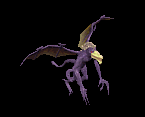 | 鞭(410) | 翼(270) | 鍵(10) | 兜・帽子(230) | 爪(210) | 能力向上1(160) | 水晶(270) | ||
| マーブルガゴイルEx | 神獣 | 一般4 | |||||||
 | 鞭(300) | 翼(200) | 鍵(10) | 兜・帽子(170) | 爪(150) | 能力向上1(120) | 水晶(200) | ||
| エボニーガゴイルEx | 神獣 | セミ1 | |||||||
 | 鞭(450) | 翼(300) | 鍵(20) | 兜・帽子(250) | 爪(230) | 能力向上1(180) | 水晶(300) | ||
| オニキスガゴイルEx | 神獣 | セミ2 | |||||||
| 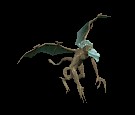 | 鞭(650) | 翼(430) | 鍵(40) | 兜・帽子(360) | 爪(330) | 能力向上1(260) | 水晶(430) | ||
| オデロンガゴイルEx | 神獣 | ボス2 | |||||||
 | 鞭(2000) | 投擲(1330) | 鍵(60) | 兜・帽子(1110) | 爪(1000) | 能力向上1(800) | |||
| トランクマンEx | 神獣 | 一般3 | |||||||
 | 杖(360) | 鞭(240) | イベント(360) | 腰(200) | 指輪(180) | 能力向上1(140) | 本(360) | ||
| ティンバーマンEx | 神獣 | 一般4 | |||||||
 | 杖(300) | 片手剣(200) | HP回復(300) | グローブ(170) | 首(150) | 能力向上1(120) | クロー(200) | 本(300) | |
| トレントEx | 神獣 | 一般4 | |||||||
 | 杖(300) | 両手剣(200) | cP回復(300) | 腰(170) | 冠(150) | 能力向上1(120) | 鎌(200) | 本(300) | |
| エンティングEx | 神獣 | セミ1 | |||||||
 | 杖(450) | 鈍器(300) | HP回復(450) | 腰(250) | イヤリング(230) | 能力向上1(180) | 本(450) | ||
| エントEx | 神獣 | ボス1 | |||||||
 | 杖(1200) | 槍(800) | cP回復(1200) | 腰(670) | イヤリング(600) | 能力向上1(480) | 本(1200) | 箒(800) | |
| 大型骸骨Zin | アンデット | 一般1 | |||||||
| 鈍器(1210) | 両手剣(810) | 弾(1210) | 職業鎧(670) | 冠(610) | 能力向上1(480) | 鎌(810) | ||
| 巨人骸骨Zin | アンデット | 一般2 | |||||||
| 鈍器(1380) | 牙(920) | 矢(1380) | 職業鎧(770) | 指輪(690) | 能力向上1(550) | 双剣(920) | 魔弾(1380) | |
| 骸骨騎士Zin | アンデット | 一般3 | |||||||
| 鈍器(1560) | スリング(1040) | 矢(1560) | 職業鎧(870) | 爪(780) | 能力向上1(620) | 魔弾(1560) | |||
| デスナイトZin | アンデット | セミ1 | |||||||
| 鈍器(650) | 牙(430) | 弾(650) | 鎧(360) | 爪(330) | 能力向上1(260) | 双剣(430) | ||
| 地獄の騎士Zin | アンデット | ボス1 | |||||||
| 鈍器(1000) | ステッキ(670) | 矢(1000) | 鎧(560) | 爪(500) | 能力向上1(400) | 魔弾(1000) | ||
| リビングメイルZin | アンデット | 一般2 | |||||||
| 弓(1380) | 片手剣(920) | 盾(1380) | 鎧(770) | 手首(690) | 能力向上1(550) | クロー(920) | 銃(1380) | |
| 鎧霊Zin | アンデット | 一般3 | |||||||
| 弓(1560) | 片手剣(1040) | 弾(1560) | 鎧(870) | 首(780) | 能力向上1(620) | クロー(1040) | 銃(1560) | |
| 幽霊鎧Zin | アンデット | 一般4 | |||||||
| 弓(1200) | 両手剣(800) | 盾(1200) | 鎧(670) | 手首(600) | 能力向上1(480) | 鎌(800) | 銃(1200) | |
| 守護鎧Zin | アンデット | セミ1 | |||||||
| 弓(650) | 片手剣(430) | 盾(650) | 鎧(360) | 首(330) | 能力向上1(260) | クロー(430) | 銃(650) | |
| ジャイアントZin | 人間 | セミ1 | |||||||
| 鈍器(650) | 牙(430) | HP回復(650) | 足(360) | 首(330) | 能力向上1(260) | 双剣(430) | |||
| コロッサスZin | 人間 | ボス1 | |||||||
| 鈍器(1000) | 牙(670) | HP回復(1000) | 足(560) | 指輪(500) | 能力向上1(400) | 双剣(670) | ||
| ラットキングZin | 悪魔 | ボス1 | |||||||
| 投擲(1000) | 笛(670) | 弾(1000) | 足(560) | 冠(500) | 能力向上1(400) | ||||
| オーガZin | 悪魔 | 一般3 | |||||||
| 鈍器(1560) | 杖(1040) | イベント(1560) | 鎧(870) | イヤリング(780) | 能力向上1(620) | 本(1040) | ||
| オーガソルジャーZin | 悪魔 | 一般4 | |||||||
| 鈍器(1200) | スリング(800) | 弾(1200) | 鎧(670) | イヤリング(600) | 能力向上1(480) | ||||
| オーガチーフZin | 悪魔 | セミ1 | |||||||
| 鈍器(650) | 杖(430) | 状態異常回復1(650) | 鎧(360) | イヤリング(330) | 能力向上1(260) | 本(430) | ||
| オーガオフィサーZin | 悪魔 | セミ3 | |||||||
| ステッキ(900) | 弓(600) | HP回復(900) | 鎧(500) | イヤリング(450) | 能力向上1(360) | 銃(600) | |||
| オーガゼネラルZin | 悪魔 | ボス2 | |||||||
| 鈍器(1100) | 杖(730) | 状態異常回復2(280) | 鎧(610) | イヤリング(550) | 能力向上1(440) | 本(730) | ||
| ゴートマンZin | 悪魔 | 一般1 | |||||||
| 笛(1210) | 鈍器(810) | 状態異常回復2(300) | マント(670) | 冠(610) | 能力向上1(480) | |||
| 赤い悪魔Zin | 悪魔 | ボス3 | |||||||
| none(1200) | 両手剣(800) | 鍵(1200) | 職業鎧(670) | 首(600) | 能力向上1(480) | 鎌(800) | ||
| ソードスパイダーZin | 動物 | 一般3 | |||||||
| 片手剣(1560) | 槍(1040) | 矢(1560) | グローブ(870) | 首(780) | 能力向上1(620) | クロー(1560) | 箒(1040) | 魔弾(1560) |
| 大型モグラZin | 動物 | 一般3 | |||||||
| 両手剣(1560) | ステッキ(1040) | 弾(1560) | 職業鎧(870) | 指輪(780) | 能力向上1(620) | 鎌(1560) | ||
| 巨大モグラZin | 動物 | 一般4 | |||||||
| 鞭(1200) | 杖(800) | 状態異常回復2(300) | グローブ(670) | 指輪(600) | 能力向上1(480) | 本(800) | ||
| ディガーZin | 動物 | セミ1 | |||||||
| 弓(650) | スリング(430) | 弾(650) | 職業鎧(360) | 指輪(330) | 能力向上1(260) | 銃(650) | ||
| マインスィーパZin | 動物 | セミ2 | |||||||
| 鞭(750) | 杖(500) | 弾(750) | グローブ(420) | 指輪(380) | 能力向上1(300) | 本(500) | |||
| ロードブローカーZin | 動物 | ボス1 | |||||||
| 笛(1000) | ステッキ(670) | 弾(1000) | 職業鎧(560) | 指輪(500) | 能力向上1(400) | |||
| ガーゴイルZin | 神獣 | 一般1 | |||||||
| 鞭(1210) | 翼(810) | 鍵(20) | 兜・帽子(670) | 爪(610) | 能力向上1(480) | 水晶(810) | |||
| マーブルガゴイルZin | 神獣 | 一般4 | |||||||
| 鞭(1200) | 翼(800) | 鍵(40) | 兜・帽子(670) | 爪(600) | 能力向上1(480) | 水晶(800) | ||
| エボニーガゴイルZin | 神獣 | セミ1 | |||||||
| 鞭(650) | 翼(430) | 鍵(60) | 兜・帽子(360) | 爪(330) | 能力向上1(260) | 水晶(430) | ||
| オニキスガゴイルZin | 神獣 | セミ2 | |||||||
| 鞭(750) | 翼(500) | 鍵(80) | 兜・帽子(420) | 爪(380) | 能力向上1(300) | 水晶(500) | |||
| オデロンガゴイルZin | 神獣 | ボス2 | |||||||
| 鞭(1100) | 投擲(730) | 鍵(100) | 兜・帽子(610) | 爪(550) | 能力向上1(440) | |||
| トランクマンZin | 神獣 | 一般3 | |||||||
| 杖(1560) | 鞭(1040) | イベント(1560) | 腰(870) | 指輪(780) | 能力向上1(620) | 本(1560) | ||
| ティンバーマンZin | 神獣 | 一般4 | |||||||
| 杖(1200) | 片手剣(800) | HP回復(1200) | グローブ(670) | 首(600) | 能力向上1(480) | クロー(800) | 本(1200) | |
| トレントZin | 神獣 | 一般4 | |||||||
| 杖(1200) | 両手剣(800) | cP回復(1200) | 腰(670) | 冠(600) | 能力向上1(480) | 鎌(800) | 本(1200) | |
| エンティングZin | 神獣 | セミ1 | |||||||
| 杖(650) | 鈍器(430) | HP回復(650) | 腰(360) | イヤリング(330) | 能力向上1(260) | 本(650) | ||
| エントZin | 神獣 | ボス1 | |||||||
| 杖(1000) | 槍(670) | cP回復(1000) | 腰(560) | イヤリング(500) | 能力向上1(400) | 本(1000) | 箒(670) | |
| アンデッド魔法師1 Zin | アンデット | 一般4 | |||||||
 | 指輪(30) | マント(50) | 杖(90) | 能力向上1(130) | 矢(170) | グローブ(200) | 本(90) | 魔弾(170) | 魔弾(170) |
| アンデッドメイジ3 Zin | アンデット | ボス2 | |||||||
 | 能力向上2(270) | マント(450) | 杖(810) | 能力向上1(1170) | 矢(1530) | 杖(1800) | 本(810) | 魔弾(1530) | |
| 装甲ボーンキメラ4 Zin | アンデット | ボス3 | |||||||
 | 宝石(360) | 首(600) | 牙(1080) | 能力向上1(1560) | 槍投擲機(2040) | 宝石(2400) | 双剣(1080) | ||
| ハイエルフ Zin | 人間 | 一般4 | |||||||
 | 片手剣(50) | ブローチ(150) | 足(100) | 能力向上1(80) | 両手剣(20) | 兜・帽子(30) | 鎌(20) | クロー(50) | |
| エルフガーディア3 Zin | 人間 | ボス2 | |||||||
 | 片手剣(450) | イヤリング(1350) | 弾(900) | 能力向上1(720) | 肩刺青(180) | 職業鎧(270) | クロー(450) | ||
| ならず者2 Zin | 人間 | セミ1 | |||||||
 | 投擲(90) | 職業鎧(260) | 牙(180) | 能力向上1(140) | 弓(40) | 盾(50) | 双剣(180) | 銃(40) | |
| 武術マスター Zin | 人間 | ボス2 | |||||||
 | 鍵(450) | 爪(1350) | 牙(900) | 能力向上1(720) | 弓(180) | 盾(270) | 双剣(900) | ||
| 逃亡魔法師3 Zin | 人間 | セミ2 | |||||||
 | 鍵(140) | 弾(410) | 両手剣(280) | 能力向上1(220) | 肩刺青(60) | グローブ(80) | 鎌(280) | ||
| 逃亡ハンター Zin | 人間 | 一般4 | |||||||
 | 投擲(50) | ブローチ(150) | 両手剣(100) | 能力向上1(80) | 状態異常回復1(20) | HP回復(30) | 鎌(100) | ||
| 脱獄犯3 Zin | 人間 | ボス1 | |||||||
 | 鍵(250) | 鈍器(750) | 両手剣(500) | 能力向上1(400) | ステッキ(100) | グローブ(150) | 鎌(500) | ||
| 狂魔(狂った悪魔…)2 Zin | 悪魔 | セミ2 | |||||||
 | 片手剣(360) | 状態異常回復2(440) | スリング(180) | 能力向上1(110) | 矢(60) | 兜・帽子(30) | クロー(360) | 魔弾(60) | |
| ゴールデンマスク Zin | 悪魔 | 一般4 | |||||||
 | 片手剣(130) | ブローチ(160) | スリング(70) | 能力向上1(40) | 状態異常回復1(20) | 兜・帽子(10) | クロー(130) | ||
| 剣闘士 Zin | 悪魔 | セミ1 | |||||||
 | 宝石(230) | 爪(280) | 腕刺青(120) | 能力向上1(70) | 矢(40) | イベント(20) | 魔弾(40) | ||
| 古代悪魔3 Zin | 悪魔 | ボス2 | |||||||
 | 宝石(1170) | 首(1440) | 両手剣(590) | 能力向上1(360) | 弓(180) | グローブ(90) | 鎌(590) | 銃(180) | |
| 死神3 Zin | 悪魔 | ボス2 | |||||||
| 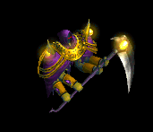 | 能力向上2(1170) | 職業鎧(1440) | 両手剣(590) | 能力向上1(360) | 肩刺青(180) | グローブ(90) | 鎌(590) | ||
| 邪臣1 Zin | 悪魔 | セミ2 | |||||||
 | 指輪(360) | 首(440) | 両手剣(180) | 能力向上1(110) | 状態異常回復1(60) | 杖(30) | 鎌(180) | 本(30) | |
| サキュバス1 Zin | 悪魔 | セミ1 | |||||||
 | 鎧(230) | イヤリング(280) | 足(120) | 能力向上1(70) | ステッキ(40) | 盾(20) | |||
| パンタズドリーム3 Zin | 悪魔 | ボス1 | |||||||
 | 鎧(650) | イヤリング(800) | 腕刺青(330) | 能力向上1(200) | ステッキ(100) | 盾(50) | |||
| カマキリ戦士 Zin | 悪魔 | セミ2 | |||||||
 | 宝石(360) | 宝石(440) | 弾(180) | 能力向上1(110) | 腰(60) | 翼(30) | 水晶(30) | ||
| ペンティライダー2 Zin | 悪魔 | セミ3 | |||||||
 | 投擲(460) | 状態異常回復2(560) | cP回復(230) | 能力向上1(140) | 肩刺青(70) | 翼(40) | 水晶(40) | ||
| バッタ悪魔3 Zin | 悪魔 | ボス1 | |||||||
 | 宝石(650) | 鈍器(800) | 弾(330) | 能力向上1(200) | 腰(100) | 翼(50) | 水晶(50) | ||
| パンプキンヘッド Zin | 悪魔 | 一般4 | |||||||
 | 指輪(130) | 状態異常回復2(160) | 帰還(70) | 能力向上1(40) | 腰(20) | グローブ(10) | |||
| ジャックランタン2 Zin | 悪魔 | ボス1 | |||||||
 | 指輪(650) | 首(800) | 弾(330) | 能力向上1(200) | 肩刺青(100) | グローブ(50) | |||
| エルダーパンプキン2 Zin | 悪魔 | ボス1 | |||||||
 | 指輪(650) | 状態異常回復2(800) | 腕刺青(330) | 能力向上1(200) | 腰(100) | グローブ(50) | |||
| ビッグモンキー2 Zin | 動物 | セミ2 | |||||||
 | 冠(190) | イヤリング(140) | 牙(110) | 能力向上1(80) | 矢(60) | 翼(30) | 双剣(110) | 水晶(30) | 魔弾(60) |
| ルーンモンキー1 Zin | 動物 | ボス2 | |||||||
 | 冠(630) | 状態異常回復2(450) | 帰還(360) | 能力向上1(270) | 矢(180) | 翼(90) | 水晶(90) | 魔弾(180) | |
| マウンテン戦士1 Zin | 動物 | セミ2 | |||||||
 | 鍵(190) | 状態異常回復2(140) | 腕刺青(110) | 能力向上1(80) | 矢(60) | 翼(30) | 水晶(30) | 魔弾(60) | |
| 蛙3 Zin | 動物 | ボス2 | |||||||
 | 両手剣(630) | 爪(450) | 帰還(360) | 能力向上1(270) | 肩刺青(180) | イベント(90) | 鎌(630) | ||
| カメレオン Zin | 動物 | 一般3 | |||||||
 | 冠(90) | 鈍器(70) | スリング(50) | 能力向上1(40) | 弓(30) | HP回復(10) | 銃(30) | ||
| カメレオン4 Zin | 動物 | ボス3 | |||||||
 | 冠(840) | 鈍器(600) | 腕刺青(480) | 能力向上1(360) | 弓(240) | イベント(120) | 銃(240) | ||
| ラジエータカメ3 Zin | 動物 | ボス2 | |||||||
 | 冠(630) | ブローチ(450) | スリング(360) | 能力向上1(270) | 肩刺青(180) | HP回復(90) | |||
| 装甲亀2 Zin | 動物 | セミ3 | |||||||
 | 能力向上2(250) | ブローチ(180) | 帰還(140) | 能力向上1(110) | 弓(70) | イベント(40) | 銃(70) | ||
| 装甲亀4 Zin | 動物 | ボス3 | |||||||
 | 冠(840) | 鈍器(600) | 腕刺青(480) | 能力向上1(360) | 両手剣(240) | 盾(120) | 鎌(240) | ||
| ダークバッファロ Zin | 神獣 | 一般3 | |||||||
 | 能力向上2(120) | 爪(170) | cP回復(90) | 能力向上1(10) | 腰(30) | イベント(70) | |||
| 赤パネルバッファ1 Zin | 神獣 | セミ2 | |||||||
 | 指輪(250) | 爪(360) | 弾(190) | 能力向上1(30) | 腰(60) | 兜・帽子(140) | |||
| ペガサス2 Zin | 神獣 | セミ3 | |||||||
 | 冠(320) | マント(460) | 宝石(250) | 能力向上1(40) | 弓(70) | 翼(180) | 水晶(180) | 銃(70) | |
| ブルーウイング Zin | 神獣 | セミ1 | |||||||
 | 冠(160) | マント(230) | 帰還(120) | 能力向上1(20) | 弓(40) | 翼(90) | 水晶(90) | 銃(40) | |
| 使徒2 Zin | 神獣 | ボス1 | |||||||
 | 鎧(450) | 状態異常回復2(650) | 腕刺青(350) | 能力向上1(50) | 矢(100) | 盾(250) | 魔弾(100) | ||
| 審判官2 Zin | 神獣 | セミ3 | |||||||
 | 杖(320) | 鈍器(460) | 杖(250) | 能力向上1(40) | 矢(70) | 盾(180) | 本(320) | 魔弾(70) | |
| 堕天使 Zin | 神獣 | 一般3 | |||||||
| 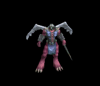 | 投擲(120) | ブローチ(170) | 帰還(90) | 能力向上1(10) | 状態異常回復1(30) | HP回復(70) | |||
| ライオンヘッド3 Zin | 神獣 | ボス1 | |||||||
 | 投擲(450) | 状態異常回復2(650) | 足(350) | 能力向上1(50) | ステッキ(100) | HP回復(250) | |||
| 皇帝蜘蛛 | 動物 | 一般3 | |||||||
| 片手剣(360) | 槍(240) | 矢(360) | グローブ(200) | 首(180) | 能力向上1(140) | クロー(360) | 箒(240) | 魔弾(360) |
| 皇帝蜘蛛 Ex | 動物 | 一般3 | |||||||
| 片手剣(360) | 槍(240) | 矢(360) | グローブ(200) | 首(180) | 能力向上1(140) | クロー(360) | 箒(240) | 魔弾(360) |
| ストーンガゴイル Ex | 神獣 | 一般1 | |||||||
| 鞭(410) | 翼(270) | 鍵(10) | 兜・帽子(230) | 爪(210) | 能力向上1(160) | 水晶(270) | |||
| ブロンズガゴイル Ex | 神獣 | 一般4 | |||||||
| 鞭(300) | 翼(200) | 鍵(10) | 兜・帽子(170) | 爪(150) | 能力向上1(120) | 水晶(200) | ||
| アイアンガゴイル Ex | 神獣 | セミ1 | |||||||
| 鞭(450) | 翼(300) | 鍵(20) | 兜・帽子(250) | 爪(230) | 能力向上1(180) | 水晶(300) | ||
| 水晶ガゴイル Ex | 神獣 | セミ2 | |||||||
| 鞭(650) | 翼(430) | 鍵(40) | 兜・帽子(360) | 爪(330) | 能力向上1(260) | 水晶(430) | |||
| 超合金ガゴイル Ex | 神獣 | ボス2 | |||||||
| 鞭(2000) | 投擲(1330) | 鍵(60) | 兜・帽子(1110) | 爪(1000) | 能力向上1(800) | |||
| デーモン傭兵 | 悪魔 | 一般1 | |||||||
| 笛(410) | 鈍器(270) | 状態異常回復2(100) | マント(230) | 冠(210) | 能力向上1(160) | |||
| デーモン傭兵 Ex | 悪魔 | 一般1 | |||||||
| 笛(410) | 鈍器(270) | 状態異常回復2(100) | マント(230) | 冠(210) | 能力向上1(160) | |||
| ハイエルフ Zin | 人間 | 一般4 | |||||||
| 片手剣(50) | ブローチ(150) | 足(100) | 能力向上1(80) | 両手剣(20) | 兜・帽子(30) | 鎌(20) | クロー(50) | |
| かまいたち Zin | 悪魔 | 一般4 | |||||||
| 宝石(360) | 宝石(440) | 弾(180) | 能力向上1(110) | 腰(60) | 翼(30) | 水晶(30) | ||
| ジャックランタン Zin | 悪魔 | 一般4 | |||||||
| 指輪(130) | 状態異常回復2(160) | 帰還(70) | 能力向上1(40) | 腰(20) | グローブ(10) | |||
| カラフルトカゲ Zin | 動物 | 一般4 | |||||||
| 冠(90) | 鈍器(70) | スリング(50) | 能力向上1(40) | 弓(30) | HP回復(10) | 銃(30) | ||
| ゴルゴン Zin | 神獣 | 一般4 | |||||||
| 能力向上2(120) | 爪(170) | cP回復(90) | 能力向上1(10) | 腰(30) | イベント(70) | |||
| 時の苗木 Zin | 神獣 | セミ1 | |||||||
| 杖(1560) | 鞭(1040) | イベント(1560) | 腰(870) | 指輪(780) | 能力向上1(620) | 本(1560) | ||
| 時の木 Zin | 神獣 | セミ1 | |||||||
| 杖(1200) | 片手剣(800) | HP回復(1200) | グローブ(670) | 首(600) | 能力向上1(480) | クロー(800) | 本(1200) | |
| 時の大樹 Zin | 神獣 | セミ1 | |||||||
| 杖(1200) | 両手剣(800) | cP回復(1200) | 腰(670) | 冠(600) | 能力向上1(480) | 鎌(800) | 本(1200) | |
| 時の老樹 Zin | 神獣 | セミ1 | |||||||
| 杖(650) | 鈍器(430) | HP回復(650) | 腰(360) | イヤリング(330) | 能力向上1(260) | 本(650) | ||
| ハイエルフ Zin | 人間 | 一般4 | |||||||
| 片手剣(50) | ブローチ(150) | 足(100) | 能力向上1(80) | 両手剣(20) | 兜・帽子(30) | 鎌(20) | クロー(50) | |
| かまいたち Zin | 悪魔 | 一般4 | |||||||
| 宝石(360) | 宝石(440) | 弾(180) | 能力向上1(110) | 腰(60) | 翼(30) | 水晶(30) | ||
| ジャックランタン Zin | 悪魔 | 一般4 | |||||||
| 指輪(130) | 状態異常回復2(160) | 帰還(70) | 能力向上1(40) | 腰(20) | グローブ(10) | |||
| カラフルトカゲ Zin | 動物 | 一般4 | |||||||
| 冠(90) | 鈍器(70) | スリング(50) | 能力向上1(40) | 弓(30) | HP回復(10) | 銃(30) | ||
| ゴルゴン Zin | 神獣 | 一般4 | |||||||
| 能力向上2(120) | 爪(170) | cP回復(90) | 能力向上1(10) | 腰(30) | イベント(70) | |||
| スイッチモグラZin | 動物 | ボス1 | |||||||
| 笛(1000) | ステッキ(670) | 弾(1000) | 職業鎧(560) | 指輪(500) | 能力向上1(400) | |||
| 大型モグラEv | 動物 | 一般3 | |||||||
| 両手剣(1560) | ステッキ(1040) | 弾(1560) | 職業鎧(870) | 指輪(780) | 能力向上1(620) | 鎌(1560) | ||
| 鎧霊Ev | アンデット | 一般3 | |||||||
| 弓(1560) | 片手剣(1040) | 弾(1560) | 鎧(870) | 首(780) | 能力向上1(620) | クロー(1040) | 銃(1560) | |
| 骸骨騎士Ev | アンデット | 一般3 | |||||||
| 鈍器(1560) | スリング(1040) | 矢(1560) | 職業鎧(870) | 爪(780) | 能力向上1(620) | 魔弾(1560) | |||
| オーガEv | 悪魔 | 一般3 | |||||||
| 鈍器(1560) | 杖(1040) | イベント(1560) | 鎧(870) | イヤリング(780) | 能力向上1(620) | 本(1040) | ||
| ソードスパイダーEv | 動物 | 一般3 | |||||||
| 片手剣(1560) | 槍(1040) | 矢(1560) | グローブ(870) | 首(780) | 能力向上1(620) | クロー(1560) | 箒(1040) | 魔弾(1560) |
| トランクマンEv | 神獣 | 一般3 | |||||||
| 杖(1560) | 鞭(1040) | イベント(1560) | 腰(870) | 指輪(780) | 能力向上1(620) | 本(1560) | ||
| トレントEv | 神獣 | 一般4 | |||||||
| 杖(1200) | 両手剣(800) | cP回復(1200) | 腰(670) | 冠(600) | 能力向上1(480) | 鎌(800) | 本(1200) | |
| マーブルガゴイルEv | 神獣 | 一般4 | |||||||
| 鞭(1200) | 翼(800) | 鍵(40) | 兜・帽子(670) | 爪(600) | 能力向上1(480) | 水晶(800) | ||
| オーガソルジャーEv | 悪魔 | 一般4 | |||||||
| 鈍器(1200) | スリング(800) | 弾(1200) | 鎧(670) | イヤリング(600) | 能力向上1(480) | ||||
| 幽霊鎧Ev | アンデット | 一般4 | |||||||
| 弓(1200) | 両手剣(800) | 盾(1200) | 鎧(670) | 手首(600) | 能力向上1(480) | 鎌(800) | 銃(1200) | |
| マインスィーパEv | 動物 | セミ2 | |||||||
| 鞭(750) | 杖(500) | 弾(750) | グローブ(420) | 指輪(380) | 能力向上1(300) | 本(500) | |||
| 地獄の騎士Ev | アンデット | ボス1 | |||||||
| 鈍器(1000) | ステッキ(670) | 矢(1000) | 鎧(560) | 爪(500) | 能力向上1(400) | 魔弾(1000) | ||
| ペンティライダー2 Sp | 悪魔 | 一般4 | |||||||
| 投擲(800) | 状態異常回復2(500) | cP回復(400) | 能力向上1(400) | 肩刺青(600) | 翼(500) | 水晶(500) | ||
| ジャックランタン4 Sp | 悪魔 | 一般4 | |||||||
| 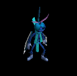 | 指輪(1300) | 状態異常回復2(1500) | 帰還(700) | 能力向上1(400) | 腰(200) | グローブ(100) | |||
| 堕天使Sp | 神獣 | セミ1 | |||||||
 | 投擲(600) | ブローチ(800) | 帰還(300) | 能力向上1(300) | 状態異常回復1(300) | HP回復(300) | |||
| ブルーウイングSp | 神獣 | セミ1 | |||||||
| 冠(1000) | マント(600) | 帰還(400) | 能力向上1(500) | 弓(600) | 翼(800) | 水晶(800) | 銃(600) | |
| パンプキンヘッドSp | 悪魔 | 一般4 | |||||||
| 指輪(1300) | 状態異常回復2(1500) | 帰還(700) | 能力向上1(400) | 腰(200) | グローブ(100) | |||
| 覚醒パンプキンZin | 悪魔 | セミ1 | |||||||
 | 指輪(130) | 状態異常回復2(160) | 帰還(70) | 能力向上1(40) | 腰(20) | グローブ(10) | |||
| カラフルトカゲ Sp | 動物 | 一般4 | |||||||
 | 冠(90) | 鈍器(70) | スリング(50) | 能力向上1(40) | 弓(30) | HP回復(10) | 銃(30) | ||
| 大型骸骨 Sp | アンデット | 一般4 | |||||||
| 鈍器(1560) | スリング(1040) | 矢(870) | 爪(780) | 能力向上1(620) | 魔弾(870) | ||||
| カメレオン Sp | 動物 | 一般4 | |||||||
 | 冠(90) | 鈍器(70) | スリング(50) | 能力向上1(40) | 弓(30) | HP回復(10) | 銃(30) | ||
| ハイエルフ Sp | 人間 | 一般4 | |||||||
 | 片手剣(50) | ブローチ(150) | 足(100) | 能力向上1(80) | 両手剣(20) | 兜・帽子(30) | 鎌(20) | クロー(50) |